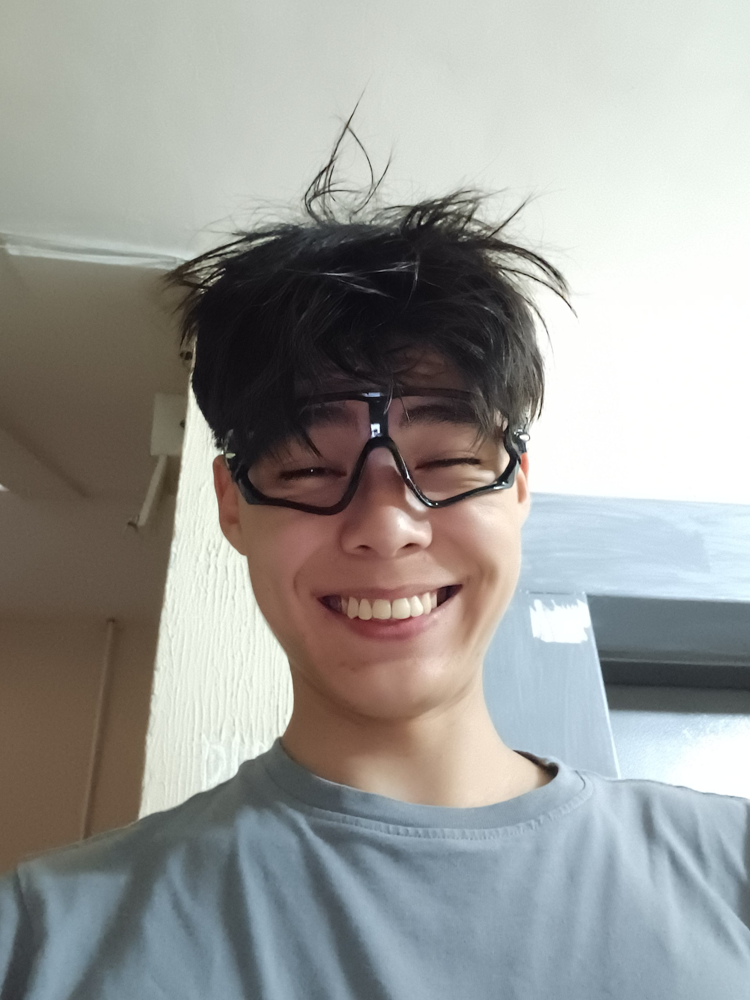
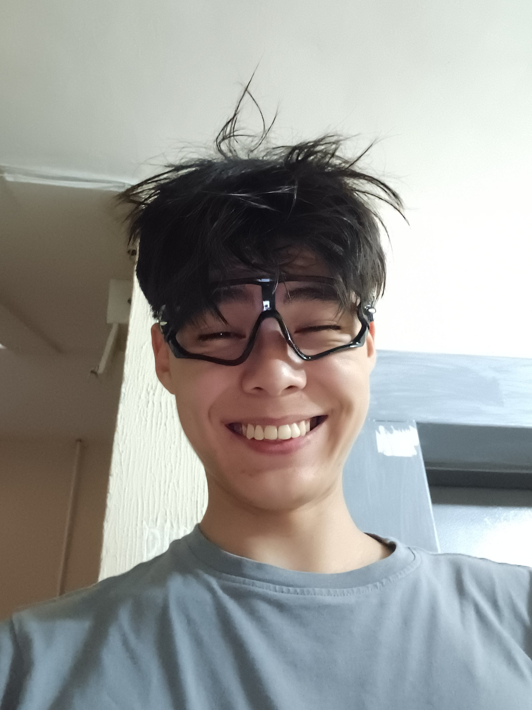

About me
My name is Diyar, I am a student of SE-2434 group. I am a cyclist, I like to ride Fixed gear. I also like to create something new like a website or application
My name is Diyar, I am a student of SE-2434 group. I am a cyclist, I like to ride Fixed gear. I also like to create something new like a website or application
